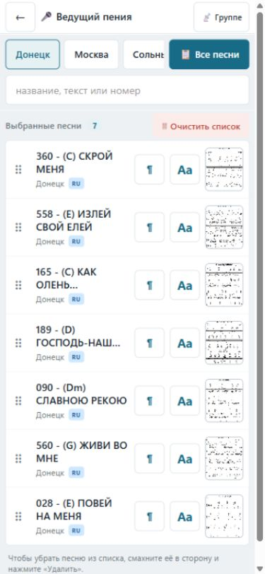
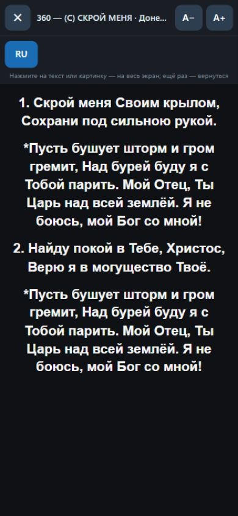

1
Прославление в зале
Ведущий, музыканты и техник работают синхронно.
Вся команда служения — в одной системе
Worship Songs связывает ведущего, музыкантов, проповедника, техника и общину.


Песни, Библия, послания, проповеди и медиа.
Каждый видит только нужные инструменты.
Зал, трансляция, ноты и телефоны группы.
Она убирает разрыв между экранами, материалами и действиями.
Ведущий, музыканты и техник работают синхронно.
Личные заметки и показ материалов одним касанием.
Телефоны участников следуют за ведущим или техником.
Интерфейсы связаны общим состоянием служения.
Порядок песен и куплеты.
Актуальная песня и ноты.
Личный список песен.
Песни и Библия на телефоне.
Экраны, текст и медиа.
Заметки и показ материалов.
Пользователи и импорт.
Зал и трансляция.
Система адаптируется к задаче.
Поиск песен, Библия, послания и проповеди.
Переводы с сопоставлением стихов.
Изображения, видео, YouTube и аудио.
Заметки, цитаты, слайды и экспорт.
Зал, трансляция, ноты и группа.
Роли, оформление, импорт и общины.
Worship Songs объединяет подготовку, проведение и участие.
Открыть систему